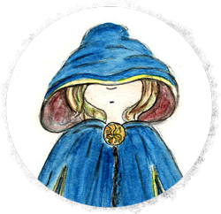

Плутанки
Зосереджені на чомусь своєму, внутрішньому

Одинаки, що протиставляють себе світу
Реалізуються з врахуванням відгуку інших і визнання, мають пунктик на унікальності та незвичностях
Тісно взаємодіють із соціумом